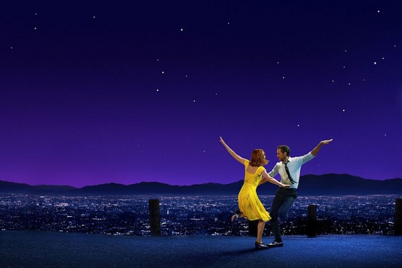

Привет!
Меня зовут Венера. Мне 19 лет. В основном мое времяпрепровождение состоит из учебы,
чтения, встреч с друзьями и занятия некоторыми бытовыми делами.
Моими любимыми цветами являются белый и синий. Из творчества писателей я не нашла для себя лучшего,
но мне нравится роман А. Дюма "Граф Монте-Кристо".
Очень люблю танцевать и стараюсь не забрасывать это творчество.
Обиды вообще не следует копить — не большое, как говорится, богатство. ©Евгений Леонов
Согласна, что обида для человека подобна обузе и что, для продолжения своего пути, лишний груз необходимо оставить.
- Сернурская средняя (полная) общеобразовательная школа №2
- Поволжский государственный технологический университет
Где я училась
Все одиннадцать классов школы я проучилась в Сернурской средней школе №2.
Школьная жизнь для меня осталась самым веселым и счастливым моментом моего детства и юности.
Сейчас я учусь в Поволжской Государственной Технологическом Университете на Экономическм факультете.
Моя специальность - это Прикладная Информатика в экономике. Обучаясь здесь,
я стараюсь не пропускать всевозможные меропрития, особенно такие фестивали, как
Осенний Цыпленок и
Студенческая весна.
Мои любимые фильмы
| Иллюзия обмана | Дом странных детей мисс Перегрин | Ла-ла Ленд | Сияние радуги |
|---|---|---|---|
 |
 | ||
| Команда лучших иллюзионистов мира проворачивает дерзкие ограбления прямо во время своих шоу, играя в кошки-мышки с агентами ФБР. | Фантастический фильм о детях, наделенных разного вида способностями. Из-за чего и находящихся в опасности. | Это история любви старлетки, которая между прослушиваниями подает кофе состоявшимся кинозвездам, и фанатичного джазового музыканта, вынужденного подрабатывать в заштатных барах. | История мальчика, которого усыновляет бездетная семья. В скором времени главный герой решается назвать, выбравшую его женщину мамой, но отношения с отцом не сразу становятся близкими. |
- Танцы
- Музыка
- Чтение
Мои хобби
=======
Моё хобби
>>>>>>> 4f34ea234859d6d87c1cb530062c10fa4ac38b55 Начиная с первого класса я училась в Школе Искусств по направлению Хореография. После его окончания стала участником ансамбля и танцевала в нем до конца 11 класса. Отсюда и пришла моя любовь к музыке.